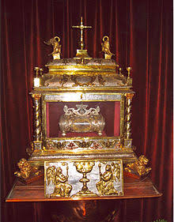
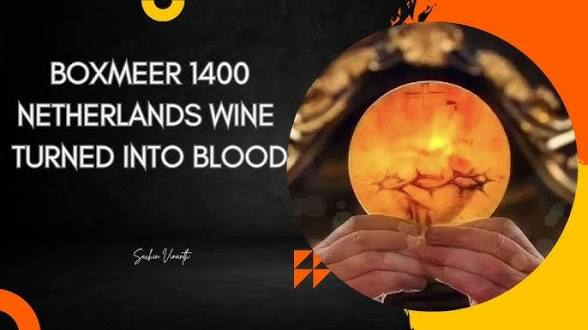
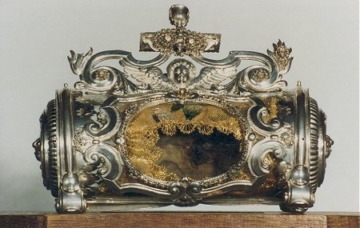
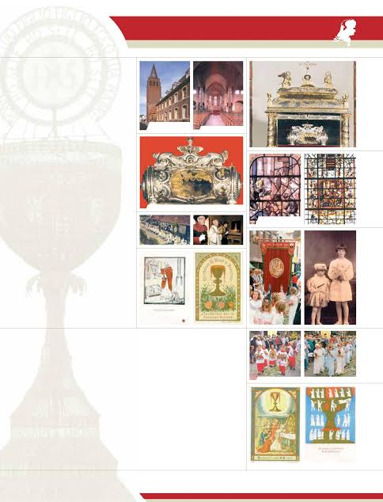

The Eucharistic Miracle of Boxmeer (Netherlands) occurred in 1400 when consecrated wine transformed into physical blood, bubbling out of the chalice and coagulating onto the altar cloth (corporal). It is one of the celebrated events documented by Blessed Carlo Acutis's exhibition.
The Relics: The blood-stained corporal and the solidified blood have been preserved for centuries.
Devotion: Popes Clement XI, Benedict XIV, Pius IX, and Leo XIII all showed personal devotion to the miracle. The anniversary of the miracle is honored annually with solemn processions through the town.